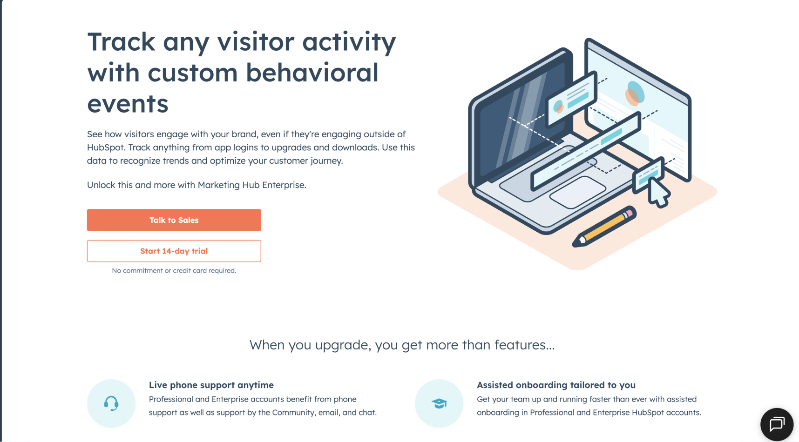
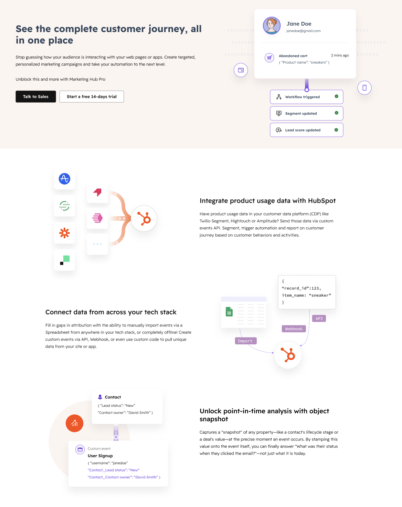
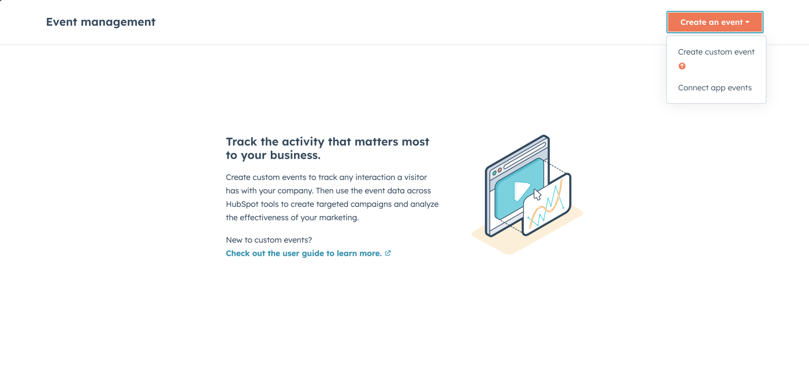
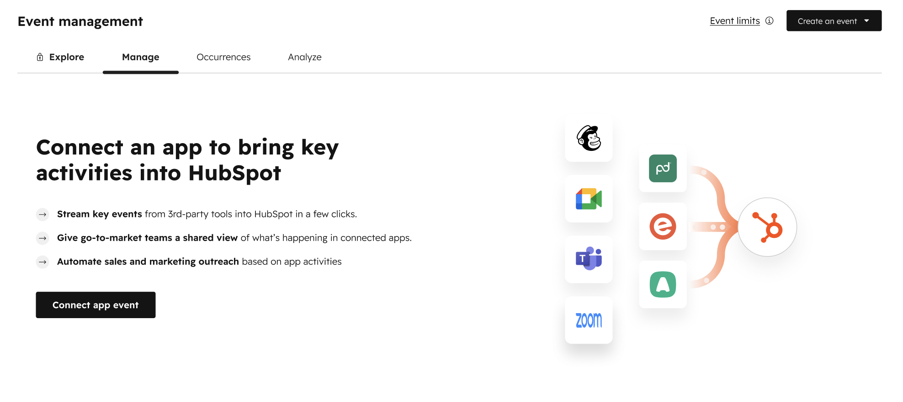
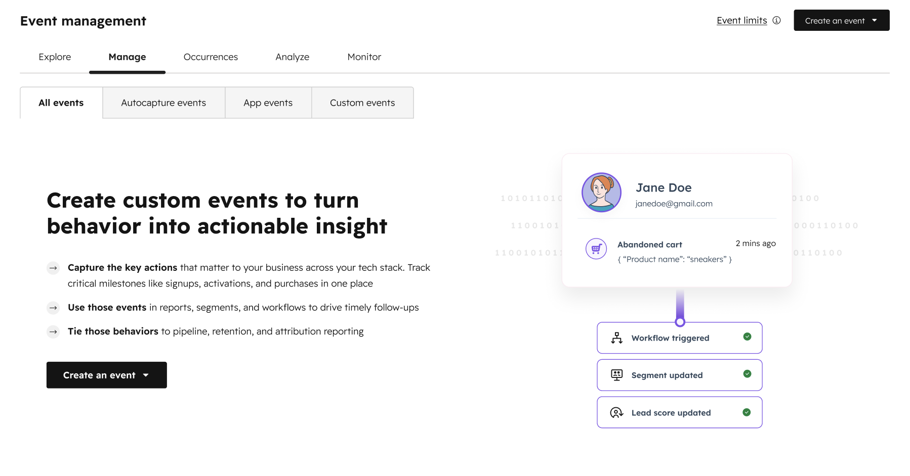

VISUAL REVAMP · LAYOUT STUDIES
A new visual language
A quiet before image sets the context; the new design gets the space and emphasis.
01
Upgrade page


02
Empty states



VISUAL REVAMP · LAYOUT STUDIES
A quiet before image sets the context; the new design gets the space and emphasis.




